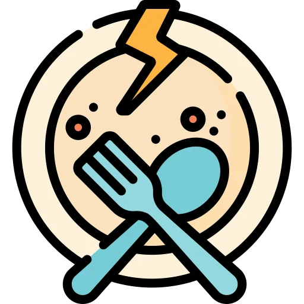

Els animals es mengen els uns als altres en la naturalesa. 
Això és cert. Tanmateix, quan un llop caça un conill o un lleó caça una gasela, el fan per necessitat: no podrien sobreviure menjant herba. Per a nosaltres, en canvi, menjar animals és només una opció: podem sobreviure perfectament sense aquests productes. Si podem evitar matar animals a través de la nostra alimentació, per què no fer-ho?
Els humans estem en el cim de la cadena aliment√†ria. üîù
És cert que actualment ens trobem en una situació de poder per sobre de qualsevol altra espècie animal, i que tenim els mitjans per a criar-los, explotar-los i matar-los com vulguem. No obstant això, el simple fet d'ostentar aquest poder no ens dona la justificació moral per a exercir-lo.
La vida d'una persona val més que la vida d'un animal. 
No fa falta posar la vida d'un animal al mateix nivell que la vida d'una persona per a decidir no menjar animals. N'hi ha prou amb considerar que la seva vida o el seu sofriment tenen més valor que un entrepà o una hamburguesa.
No es pot sobreviure sense menjar carn/ous/lactis. 
Tots els nutrients que trobem en la carn, els ous i els lactis també poden ser obtinguts d'altres fonts. Dit d'una altra manera, podem obtenir tots els nutrients que necessitem sense haver de consumir animals. L'Acadèmia de Nutrició i Dietètica dels Estats Units, l'organització amb més nutricionistes professionals del món, afirma que les dietes 100% vegetals són adequades per a qualsevol etapa de la vida, incloent-hi la infància i l'embaràs.
Menjar vegà és car. 
És cert que les hamburgueses o formatges vegetals solen ser més cars que els seus equivalents animals. No obstant això, la gran majoria de productes vegetals són significativament més barats que la carn, els ous o el formatge. Verdures, llegums, arròs, pasta, pa, cereals, fruita, tubercles... els aliments més barats són tots vegetals.
Les plantes també poden sentir dolor. 
Una de les principals funcions de la consciència és permetre un comportament flexible i variable en funció del context. Donada la limitada capacitat de moviment i d'acció de les plantes, costa pensar en situacions en què el fet d'estar dotades de consciència els suposi un avantatge competitiu. Si tenim en compte que la consciència és un procés costós energèticament, sembla poc probable que la selecció natural hagi seleccionat plantes conscients de si mateixes.
No obstant això, si assumim la possibilitat que les plantes sentin dolor, una dieta vegana permetria fer sofrir moltes menys plantes que una dieta omnívora. Els animals de granja o de piscifactoria necessiten menjar plantes o altres animals per a créixer, i el procés de conversió d'aliment vegetal a aliment animal és molt ineficient. Per exemple, per a obtenir 1Kg de carn de porc s'ha d'alimentar al porc amb més de 6Kg de vegetals. Dit d'una altra manera, consumir productes d'origen animal requereix conrear moltes més plantes que consumir aquestes plantes directament.
I si com a carn/ous ecològics? 
En algunes zones pot haver-hi granges obertes on els animals visquin a l'aire lliure.
És evident que, en aquests casos particulars, les condicions de vida dels animals són millors que en una granja convencional, i que al llarg de la seva vida sofreixen menys. No obstant això, la producció de carn, ous o lactis sempre requereix matar als animals dels quals ens beneficiem. Si has tingut un gos o un gat amb bones condicions de vida, consideraries ètic degollar-lo per a menjar la seva carn?
Sources üîç
- Melina et al. (2016). Position of the Academy of Nutrition and Dietetics: Vegetarian Diets.
- Baars, Bernard J. (1988). In Cognitive Theory of Consciousness. Cambridge University Press.
- Alexander et al. (2016). Human appropriation of land for food: the role of diet. Global Environmental Change, 41, 88-98.